A curated collection of instructional design artifacts, eLearning modules, multimedia projects, and doctoral course reflections demonstrating applied mastery across the instructional design cycle.
Featured Project
Articulate Rise 360 interactive tutorial.
Two-Dimensional Geometrical Shapes is a fully interactive, self-paced eLearning module using Rise 360 with branching menus, audio narration, embedded videos, and responsive design aligned with WCAG accessibility guidelines.
Canvas Course Prototype: The Principles of Instructional Design.
Designed a full prototype online course in the Canvas LMS with clear learning outcomes, modular content, varied assessments, and multimedia, paired with a narrated walkthrough explaining the design rationale. Applied ADDIE, UDL, backward design, and multimedia learning principles, with deliberate attention to learner decision points.
Canvas LMSADDIEUniversal Design for LearningBackward DesignMultimedia Learning
Faculty Training Prototype
Activating Annotation in Blackboard, CIT Faculty PD.
A documentation and training prototype I designed and delivered for the University of Alabama Center for Instructional Technology (July 2024). The deck walks faculty from set-up through pedagogy: enabling the Hypothesis tool inside Blackboard, configuring grading and group readings, and applying social-annotation strategies to course readings, syllabi, and lecture slides. The methodology behind the documentation follows ADDIE.
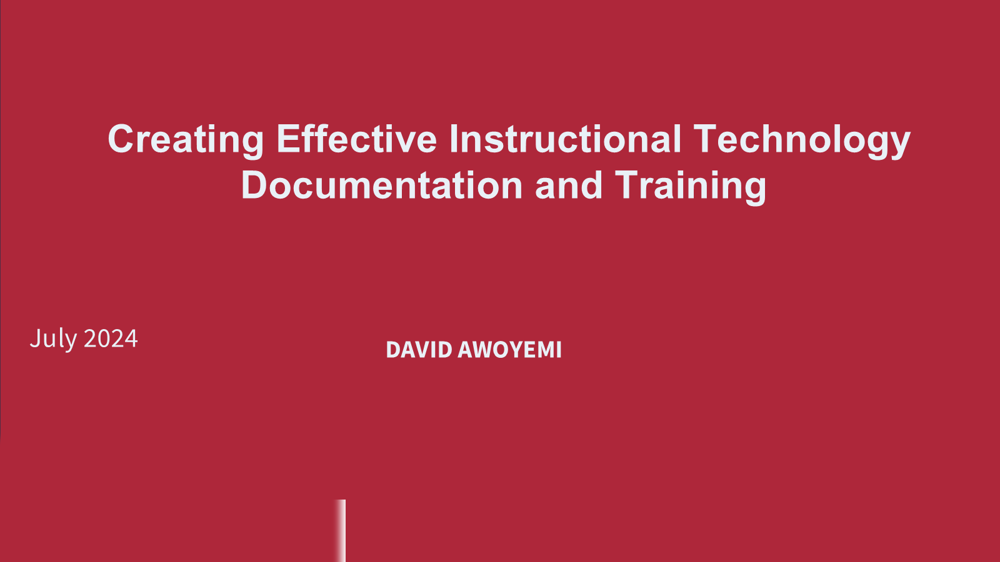
Title slide, UA Center for Instructional Technology / Blackboard / hypothes.is
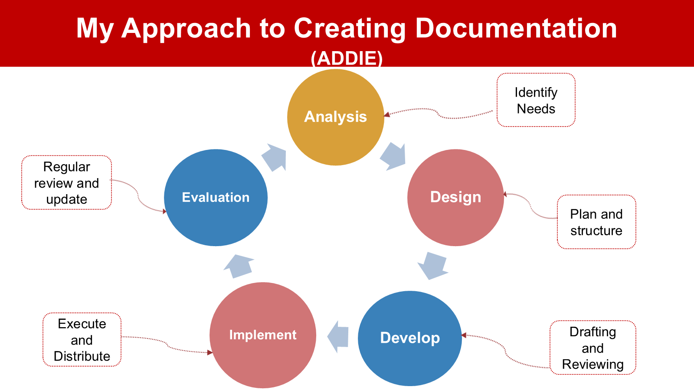
ADDIE methodology guiding the documentation cycle.
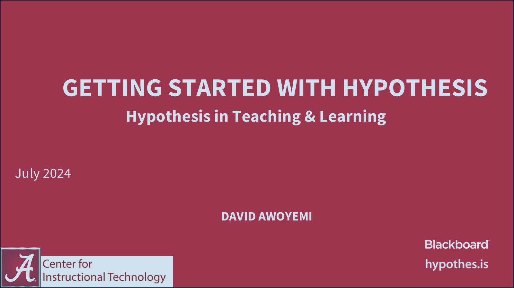
Section divider: getting started with Hypothesis in teaching and learning.
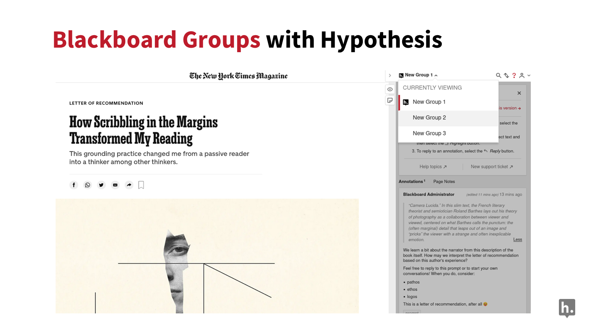
Demo, Blackboard Groups with Hypothesis on a shared course reading.
AI-immersive virtual reality intervention for civil engineering education.
Design and Development Research applying systematic instructional design methodology to an immersive VR-based safety training intervention with two learning phases and AI-driven adaptive feedback.
SOS Construction sceneUnstable scaffoldAI avatar feedback
Designing and developing an immersive virtual reality intervention for civil engineering education.
Phase 1 guides learners through hazard-identification scenarios. Phase 2 introduces an AI avatar that delivers diagnostic and corrective feedback. The work is grounded in experiential and situated learning theory and has already supported research dissemination across major venues.
Phase 1Hazard navigation across multiple scenarios
Phase 2AI avatar feedback and mastery-gated support
A 16-activity STEM curriculum for upper-elementary learners integrating physiological computing, visual coding, and culturally responsive STEM pedagogy, alongside a two-day teacher professional development sequence.
Story characters: Zada, Milo, and Zappy the AI robot.Roadmap of 16 curriculum activities across coding, data, and sensing.
Research team and project leads.
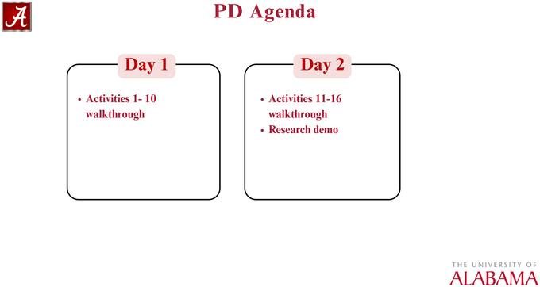
Two-day professional development agenda for teachers and facilitators.Weekly schedule coordinating camp activities and data collection.
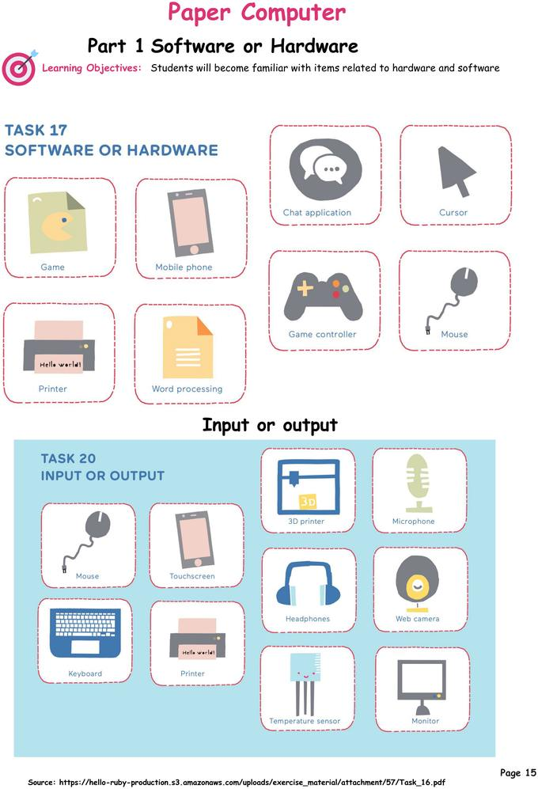
Paper computer activity introducing hardware and software logic.
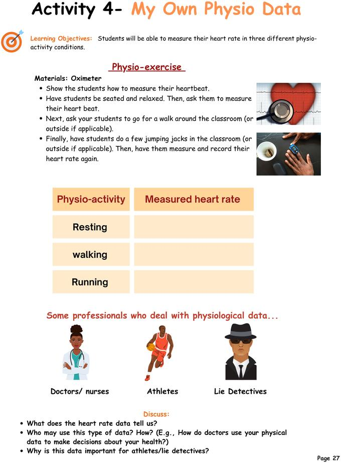
Learners using body-based data to connect sensing and computation.
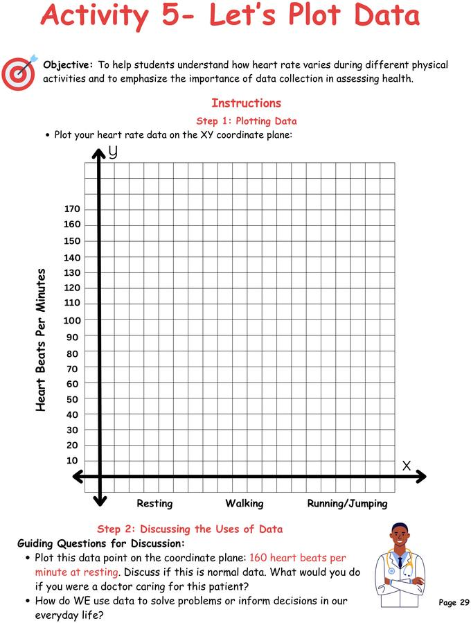
Students graphing heart rate data across activities.
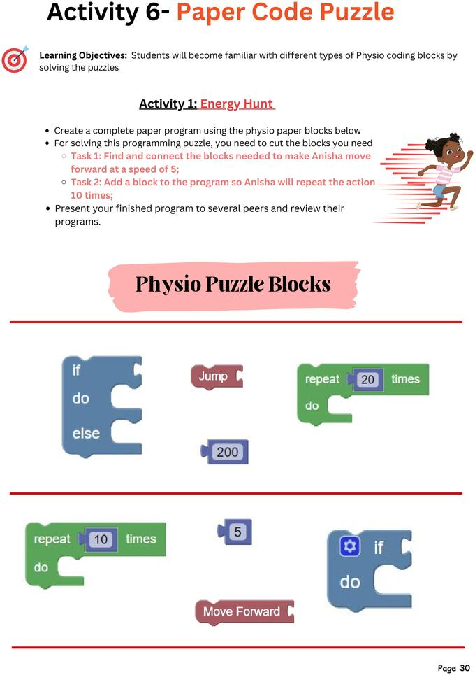
Paper block programming for algorithmic thinking.
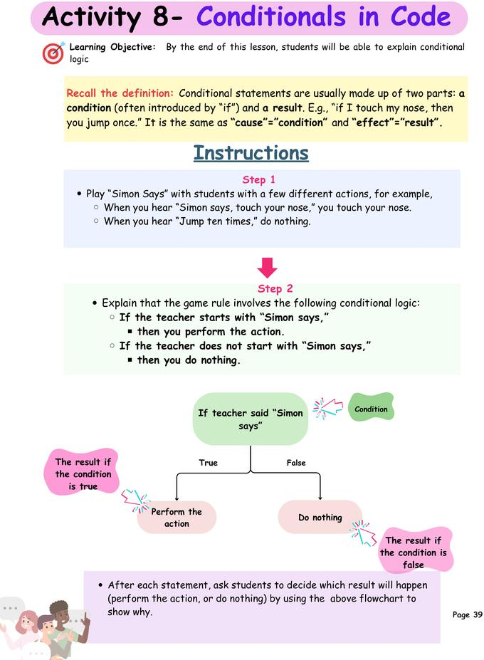
Conditionals and logic through kinesthetic gameplay.
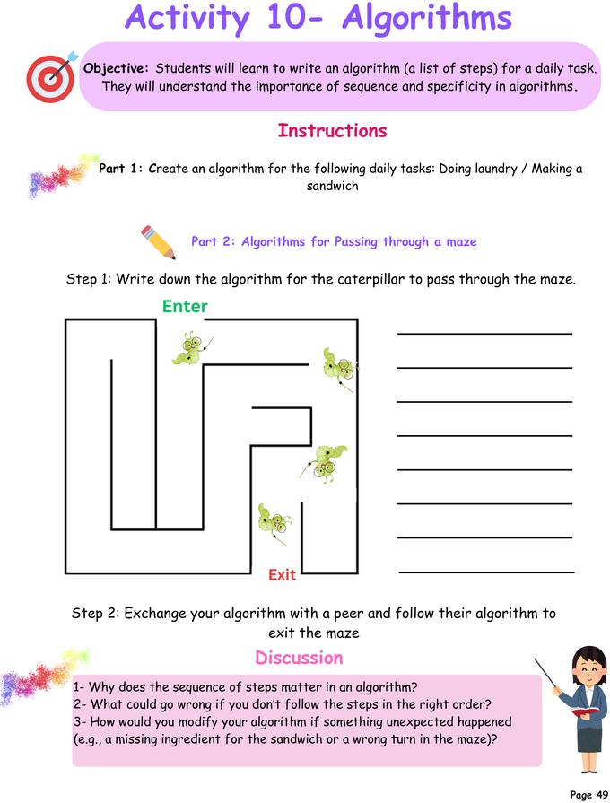
Students creating pseudocode algorithms for daily tasks.
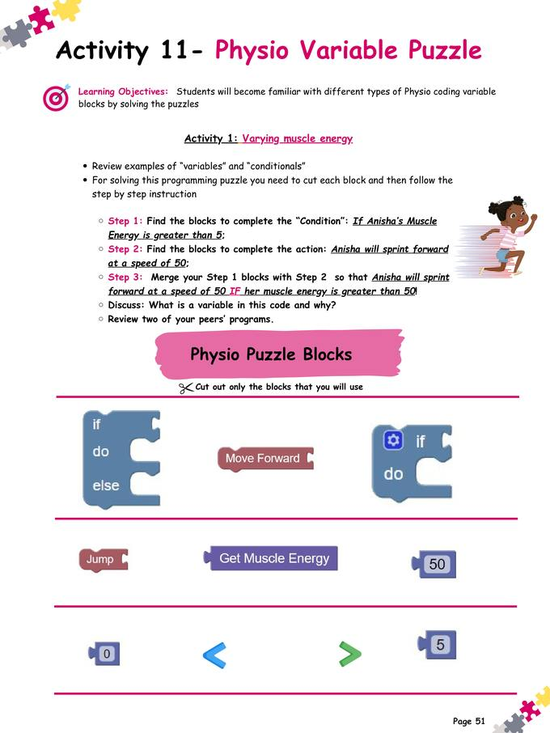
Coding and sensing challenges in later-stage activities.
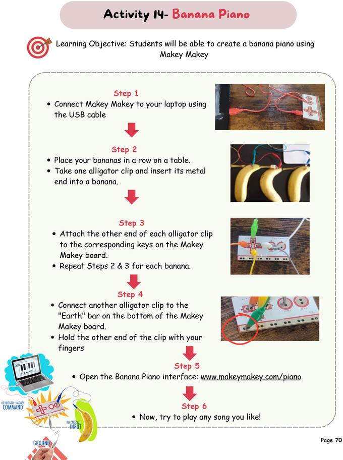
Makey Makey circuitry and playful interaction design.
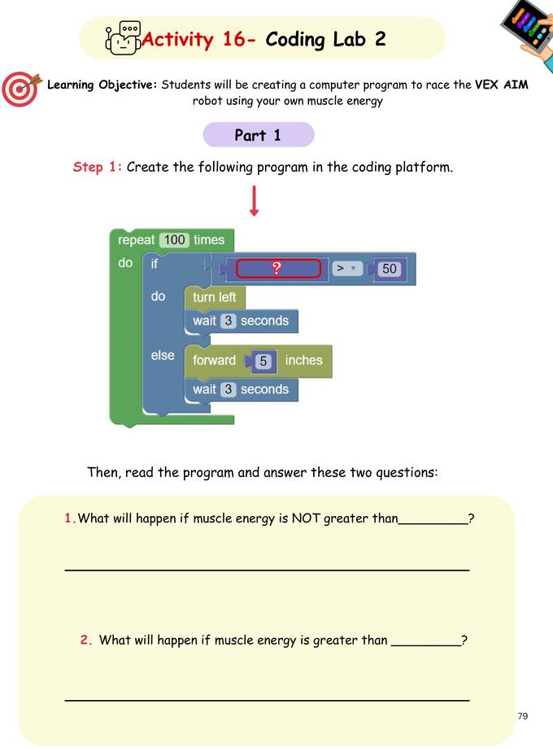
Advanced coding lab with robotics and physiological sensors.
Professional Development and Training Documentation
Workshop design, onboarding, and facilitation artifacts.
Training materials developed through SME collaboration, faculty development work, and eLearning design practice.
Faculty development documentation for Hypothesis annotation in Blackboard.Behavioral observation and microgenetic analysis training for researchers.A learner-facing onboarding module designed through SME collaboration.
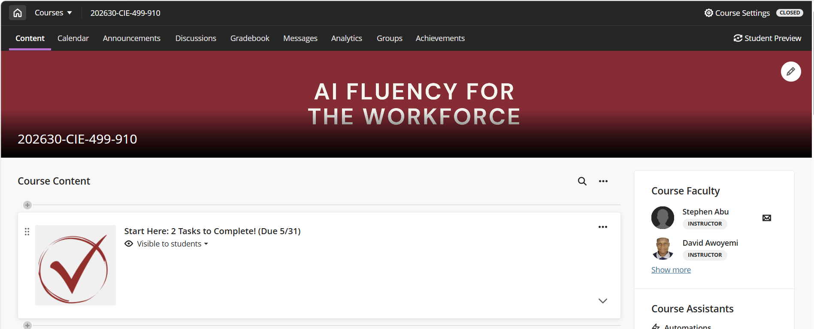
Instructor of record for the undergraduate course AI Fluency for the Workforce (CIE 499-910), as listed on the official Blackboard course page.
Arts-Integrated GenAI Literacy PD Series
Music and theatre branches of the professional development program.
These videos sit inside the Arts-Integrated GenAI Literacy Development Program, a Blackboard-delivered course for pre-service teachers. Each branch (Music or Theater) carries four hands-on lessons in which participants build prompt-engineering, AI-feedback evaluation, and AI-ethics literacy by creating songs, soundtracks, animated performances, and dramatic storytelling with tools like SUNO AI, Boomy, Animake, Invideo AI, and Soundtrap.
Arts IntegrationMusic
Introduction, Music Lesson One
Introductory video for the arts-integrated music PD series, setting learning aims and the music-technology integration approach.
Arts IntegrationMusicTeacher PD
Music Lesson Four
Later-stage music module focused on classroom application and teacher professional development.
Digital SkillsCreative Production
The Symphony of Digital Skills
A creative instructional video using musical metaphor to communicate digital competency frameworks for educators.
AI ToolsMusic
SOUNDRAW, AI Music Composition
Demonstrates AI-supported music generation as a tool for creative instructional production.
TheatreArts IntegrationTeacher PD
Welcome, Theatre Module
Opening orientation for the theatre arts integration professional development sequence.
TheatreArts Integration
Theatre Lesson Two, Digital Drama
Builds deeper pedagogical strategy and classroom application into the theatre sequence.
TheatreFormative Assessment
Theatre Lesson Three, Digital Storytelling
Focuses on digital storytelling and formative assessment within arts-based instruction.
TheatreSummative Assessment
Theatre Lesson Four
Capstone lesson emphasizing performance-based assessment and reflective practice.
TheatreModule Overview
Theatre Module, Full Overview
Comprehensive overview of the full theatre module from introduction to evaluation.
Doctoral Coursework Portfolio
Course artifacts and reflections.
Select a course to explore artifacts, reflections, and key learnings from the doctoral program in instructional technology.
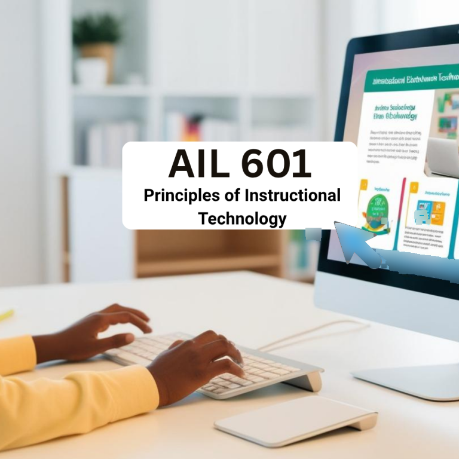
AIL-601
Foundations of Instructional Technology
Adobe Express Portfolio and UDL Reflection
Developed a portfolio demonstrating UDL, motivational theory, and core instructional technology concepts while clarifying my scholarly stance.
Applied systematic design models, including Gagne and TEC-VARIETY, to the sequencing and support structures that later informed immersive learning work.
Canvas Course Prototype: The Principles of Instructional Design
Designed a full prototype online course in the Canvas LMS with clear learning outcomes, modular content, varied assessments, and multimedia, paired with a narrated walkthrough explaining the design rationale. Applied ADDIE, UDL, backward design, and multimedia learning principles, with deliberate attention to learner decision points.
Connected XR design, AI-supported feedback, and research dissemination through a doctoral course that directly fed into the immersive safety training project.